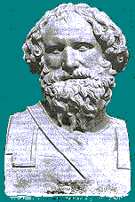

👆 Trascina il solido su e giù
⬇️ Peso0 g
⬆️ Spinta0 g
⚖️ Bilancia0 g
💧 Spostato0 cm³
Scegli il solido (il numero: quanti grammi pesa 1 cm³)
Scegli il liquido
Buco nascosto nel solido (cavità vuota)
Volume del solido: 100 cm³ · buco:
🎯 Missioni
🏛️ Che cos'è la spinta di Archimede?

Dal programma del Prof. Carmelo Muscolino. Prova la versione originale